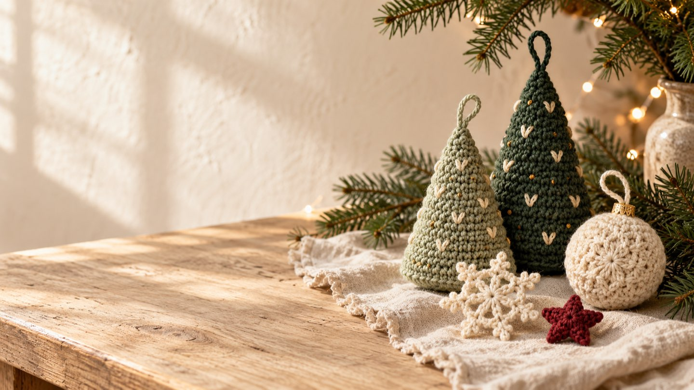
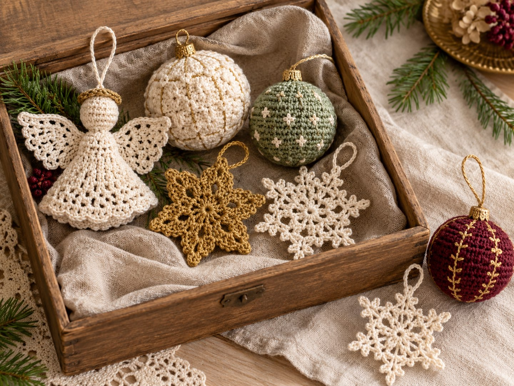
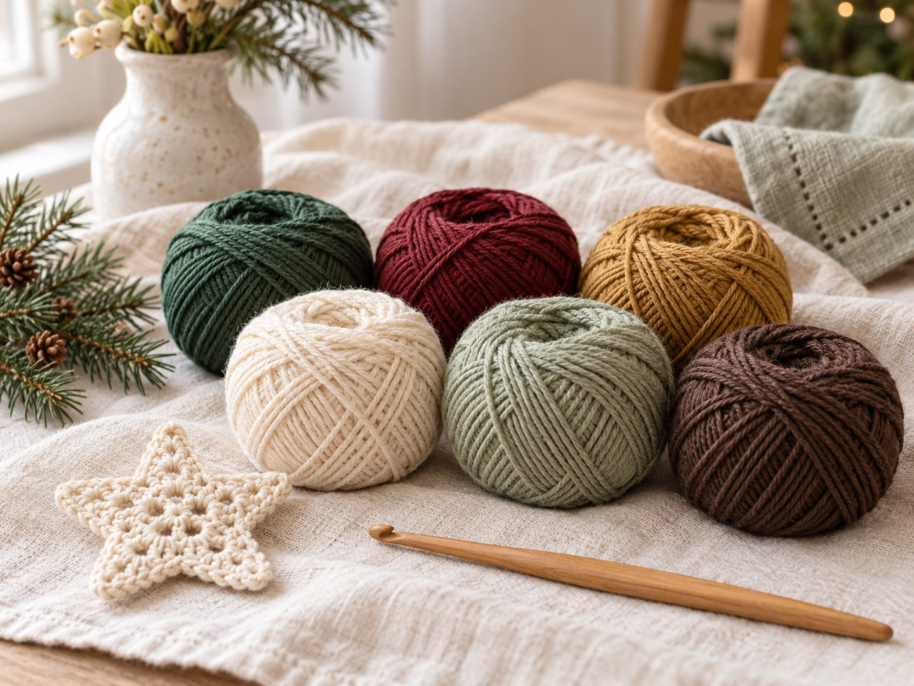
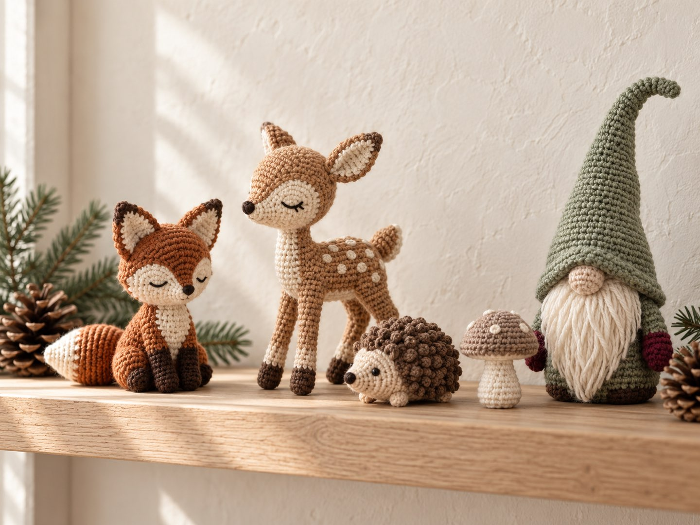
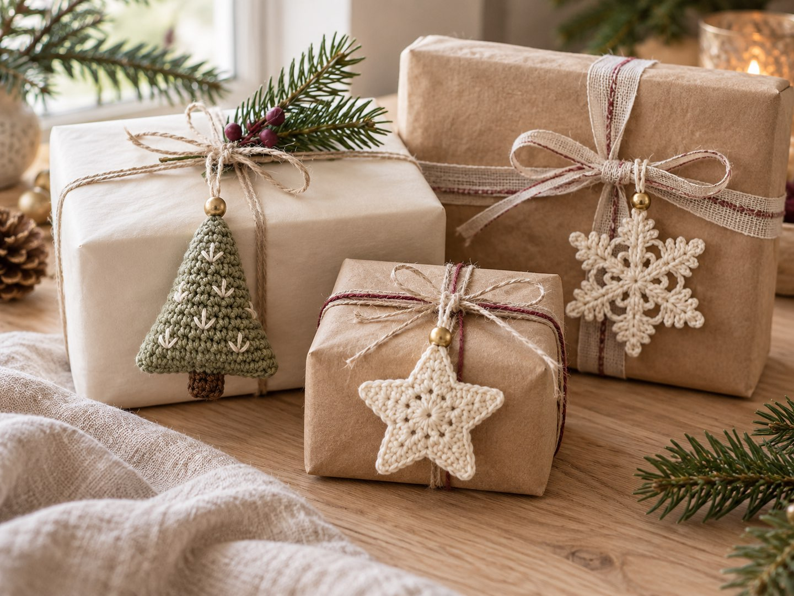
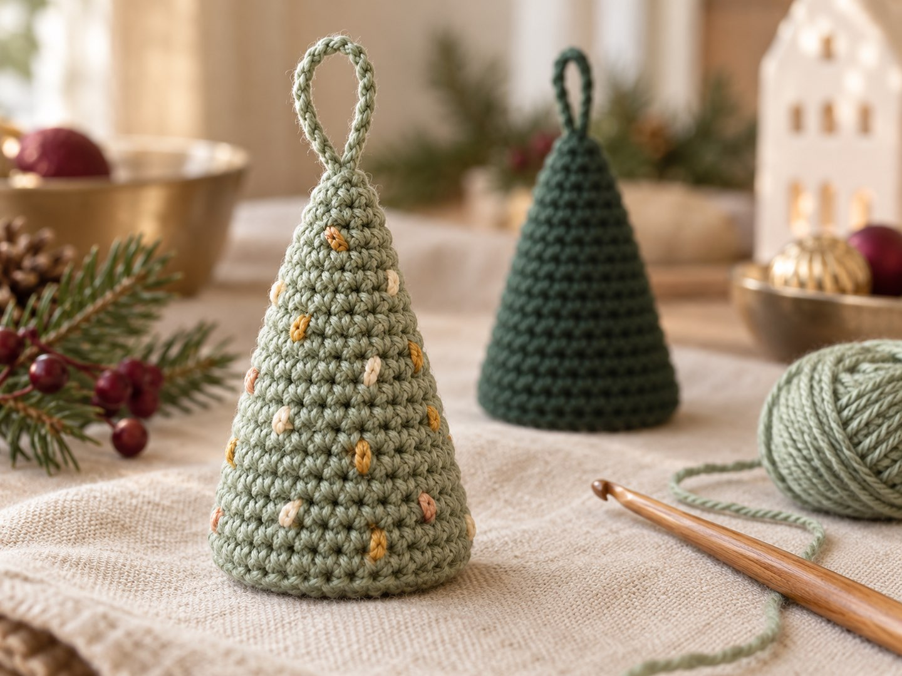

Christmas Crochet 2026: Grandma Chic, Natural Tones & Woodland Animals – Plus a Free Mini Christmas Tree Pattern

In short
Christmas crochet in 2026 is more personal and cozy: decorations should look collected over the years rather than bought in one go – “grandma chic” with crocheted baubles, angels and snowflakes, plus woodland animals and gnomes. Colors range from deep green, burgundy and antique gold to cream and natural tones. And as time is getting short, small, quick projects are ideal. Further down you'll find a free beginner pattern for a mini Christmas tree ornament.
It's the end of October – if you want to crochet Christmas decorations, now is a good time to start. The first Sunday of Advent is on November 29, and small projects like ornaments or gift tags are done in a few cozy evenings. What I like best about Christmas is the imperfect: a bauble here, a slightly crooked star there. Luckily, this year's trend goes exactly in that direction. Here are the ideas – and a little tree to make yourself.
1. Grandma chic: what does “collected” Christmas decor look like?

After years of perfectly matched decor, the trend is returning to pieces that feel personal: crocheted baubles, angels, snowflakes and small, slightly wonky figures that look as if they came out of Grandma's Christmas box. Nothing has to match exactly – that's the charm. For crocheters that's good news: handmade texture and small irregularities are very much part of the look.
My tip: add one or two new pieces every year. After a few years you'll have a collection with a story.
2. Which colors are in for Christmas 2026?

Depending on the source, two directions show up: bold jewel tones such as emerald and burgundy combined with warm metallics like antique gold – and a calmer version in cream, white and gold or in natural greens and browns. Plaid shows up too, for example on a basket or on a couple of ornaments.
- Fir green
- Burgundy
- Antique gold
- Cream
- Sage
- Espresso brown
3. Woodland animals and gnomes: what can you crochet?

Besides the classic motifs, small woodland animals and Scandinavian-style gnomes are popular: fox, deer, hedgehog, mushroom – or a gnome with a long pointed hat. In cream, sage and brown they suit the calm natural-tone look and can stay out as winter decor after the holidays. For the mushroom, use my mini mushroom pattern, and the little crochet bear makes a woodland resident with a Christmas scarf.
4. What's quick to finish? Ornaments and gift tags

Small projects with fast results are popular across 2026 – and right before Christmas anyway: tree ornaments, snowflakes, stars and mini figures can be crocheted in one evening and work as gift tags, table decor or a small present. Good to know: the smaller the piece, the more it's allowed to be a little crooked (see grandma chic!).
Pattern: Mini Christmas tree ornament

- Size
- approx. 2–2.5 in (5–6 cm) tall (a guide – it depends on your yarn, so measure your test piece)
- Time
- about 1 hour
- Level
- Beginner
- Yarn
- Cotton in fir green or sage (approx. 10 g), scraps in cream, antique gold or apricot for decoration
- Tools
- 2.5–3 mm hook, toy stuffing, stitch marker, tapestry needle
Abbreviations (US terms)
MR = magic ring · sc = single crochet · inc = 2 sc in the same stitch · dec = single crochet 2 together · BLO = back loop only · ch = chain · sl st = slip stitch. All abbreviations are listed in the abbreviations guide.
Work in continuous rounds from the tip down and mark the first stitch of each round. Want to brush up on the basics? Try the crochet basics or the learning path – and the stitch counter helps you keep track of your rounds.
Base
- MR, 6 sc (6)
- Inc × 6 (12)
- Sc around (12)
- (Sc, inc) × 6 (18)
- Rounds 5–6: sc around (18) – that's 2 rounds
- (2 sc, inc) × 6 (24)
- Rounds 8–10: sc around (24) – that's 3 rounds
Body
- BLO: sc around (24) – this gives a clean edge
- (2 sc, dec) × 6 (18)
- (Sc, dec) × 6 (12) – stuff firmly now
- Dec × 6 (6)
Cut the yarn, weave it through the last 6 stitches, pull tight and weave in the end.
Hanging loop and decoration
- Join new yarn with a sl st at the tip (in the center of the magic ring), ch 12 and close with a sl st in the same spot. Weave in the end.
- With cream, antique gold or apricot, embroider small stitches as “lights” around the body – irregular is fine, it fits the grandma chic look.
Gift tag variation: make two or three little trees in different greens and tie them to a package with a piece of cord.
More ideas
My pumpkin pattern is a good next step once you're comfortable crocheting in rounds – in cream or antique gold it turns into a winter bauble. If you want even more cozy inspiration, Crochet trends fall 2026 has ideas for the weeks before, and Halloween crochet 2026 shows how dark botanical decor can carry on into winter.
Your turn! Red-green-gold or calm natural tones? Show me your ornaments on Instagram or TikTok! 🎄
Frequently asked questions about Christmas crochet
What are the Christmas crochet trends for 2026?
According to current trend roundups (sources below), the main themes are grandma chic with crocheted baubles, angels and snowflakes, woodland animals and Scandinavian gnomes, and jewel tones with plaid. Overall, small, quick projects and natural yarns are in demand.
Which colors suit Christmas 2026?
Sources mention jewel tones such as emerald and burgundy with antique gold, as well as cream, white and gold and natural greens and browns. Pick two or three colors and repeat them across several projects.
What can beginners crochet for Christmas?
Small pieces worked in single crochet are a good choice: a mini Christmas tree, stars, baubles or gift tags. The mini tree in this post only needs the magic ring, single crochet, increases and decreases.
When should I start Christmas decorations?
Small ornaments and gift tags take just a few evenings. If you start now, at the end of October, you'll be done calmly before the first Sunday of Advent (November 29, 2026). Bigger projects such as blankets or sweaters take much longer.
Which yarn works for crocheted ornaments?
Cotton yarn has clear stitches and holds its shape well. For the mini tree, use cotton with a 2.5–3 mm hook. The size depends on the yarn, so crochet a test piece first.